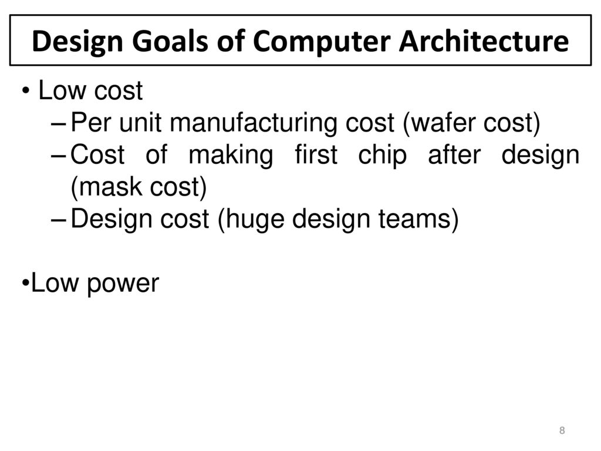

Design goals Page
Links:

Design Goals:
Performance
Modern computer performance is often described in instructions per cycle (IPC), which measures the efficiency of the architecture at any clock frequency; a faster IPC rate means the computer is faster. Older computers had IPC counts as low as 0.1 while modern processors easily reach near 1. Superscalar processors may reach three to five IPC by executing several instructions per clock cycle.[citation needed]
Counting machine-language instructions would be misleading because they can do varying amounts of work in different ISAs. The "instruction" in the standard measurements is not a count of the ISA's machine-language instructions, but a unit of measurement, usually based on the speed of the VAX computer architecture.
Many people used to measure a computer's speed by the clock rate (usually in MHz or GHz). This refers to the cycles per second of the main clock of the CPU. However, this metric is somewhat misleading, as a machine with a higher clock rate may not necessarily have greater performance. As a result, manufacturers have moved away from clock speed as a measure of performance.
Other factors influence speed, such as the mix of functional units, bus speeds, available memory, and the type and order of instructions in the programs.
There are two main types of speed: latency and throughput. Latency is the time between the start of a process and its completion. Throughput is the amount of work done per unit time. Interrupt latency is the guaranteed maximum response time of the system to an electronic event (like when the disk drive finishes moving some data).
Performance is affected by a very wide range of design choices — for example, pipelining a processor usually makes latency worse, but makes throughput better. Computers that control machinery usually need low interrupt latencies. These computers operate in a real-time environment and fail if an operation is not completed in a specified amount of time. For example, computer-controlled anti-lock brakes must begin braking within a predictable and limited time period after the brake pedal is sensed or else failure of the brake will occur.
Benchmarking takes all these factors into account by measuring the time a computer takes to run through a series of test programs. Although benchmarking shows strengths, it shouldn't be how you choose a computer. Often the measured machines split on different measures. For example, one system might handle scientific applications quickly, while another might render video games more smoothly. Furthermore, designers may target and add special features to their products, through hardware or software, that permit a specific benchmark to execute quickly but don't offer similar advantages to general tasks.
Power efficiency
Main articles: Low-power electronics and Performance per watt
Power efficiency is another important measurement in modern computers. A higher power efficiency can often be traded for lower speed or higher cost. The typical measurement when referring to power consumption in computer architecture is MIPS/W (millions of instructions per second per watt).
Modern circuits have less power required per transistor as the number of transistors per chip grows.[18] This is because each transistor that is put in a new chip requires its own power supply and requires new pathways to be built to power it. However the number of transistors per chip is starting to increase at a slower rate. Therefore, power efficiency is starting to become as important, if not more important than fitting more and more transistors into a single chip. Recent processor designs have shown this emphasis as they put more focus on power efficiency rather than cramming as many transistors into a single chip as possible.[19] In the world of embedded computers, power efficiency has long been an important goal next to throughput and latency.
Shifts in market demand
Increases in clock frequency have grown more slowly over the past few years, compared to power reduction improvements. This has been driven by the end of Moore's Law and demand for longer battery life and reductions in size for mobile technology. This change in focus from higher clock rates to power consumption and miniaturization can be shown by the significant reductions in power consumption, as much as 50%, that were reported by Intel in their release of the Haswell microarchitecture; where they dropped their power consumption benchmark from 30 to 40 watts down to 10-20 watts.[20] Comparing this to the processing speed increase of 3 GHz to 4 GHz (2002 to 2006)[21] it can be seen that the focus in research and development are shifting away from clock frequency and moving towards consuming less power and taking up less space.